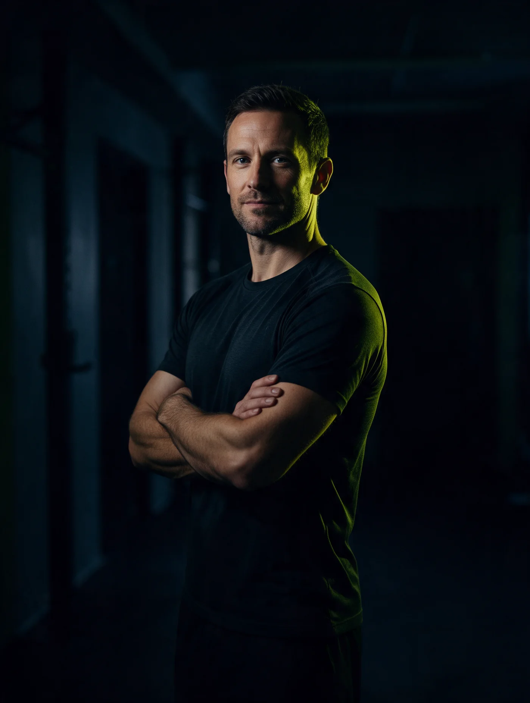

Gymkoç
Salonun
tek panelde.
Antrenörler dersini sahada, telefonlarından saniyeler içinde girer. Sen her şubeyi, her PT'yi tek ekrandan izlersin.
I — Antrenman
Enerji sahada başlar.
Bire bir dersler PT'nin elinde. Kimin, ne zaman, kiminle çalıştığı bir bakışta belli — salon sahibi uzaktan, gerçek zamanlı izler.
II — Ekipman
Her ekipmanın bir amacı var.
Zil ağırlık. Beton zemin. Ve az sonra göreceğin gibi, arkasında gerçekten çalışan bir sistem.
09:00
3/3 · Dolu
09:00
E
D
10:00
E
Gerçek ürün arayüzü — mockup değil.
III — Ekip
Arkasında gerçek insanlar var.
Panel, PT'lerin işini kolaylaştırmak için var: raporları, saatleri, kapasiteyi tek yerde tutar — kağıt takvime, WhatsApp mesajına gerek kalmaz.

Antrenör, günün tüm derslerini tek ekrandan yönetiyor.
Gymkoç
Kendi salonunu şimdi oluştur, ya da zaten bir hesabın varsa giriş yap.
gymkoc — spor salonları için yönetim paneli. Her salon kendi markası, kendi ekibi, kendi verisiyle çalışır.